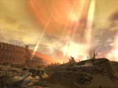The Great Northern Wall - Ascalon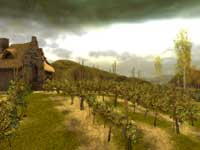Fields of Ascalon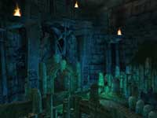The Catacombs - Ascalon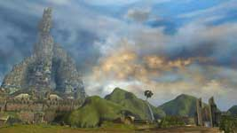Lion's Arch - Kryta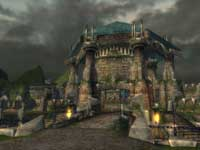The Hunters Isle - Krytan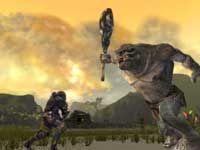Ettin Battle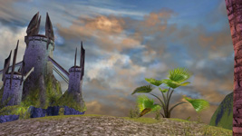Floating Castle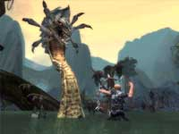Root Behemoth Battle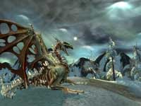Bone Dragon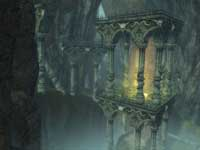Dwarven Ruins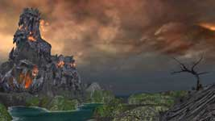Ring of Fire Islands
Factions
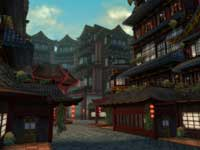Kaineng City - Affluent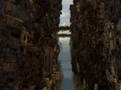Kaineng City - Urban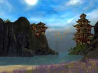Kaineng City - Rural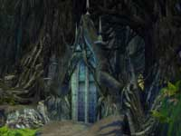Echovald Forest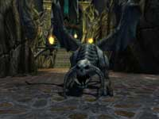Stone Reaper - Echovald Forest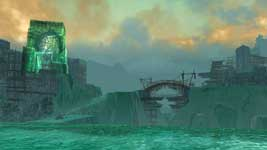The Jade Sea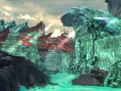The Jade Sea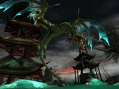Saltspray Dragon - The Jade Sea
Nightfall
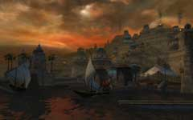Gandara, The Moon Fortress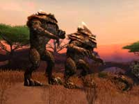Cracked Mesa - Kourna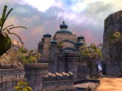Vabbi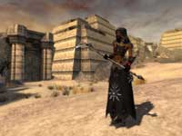Female Dervish - The Desolation
Eye of the North
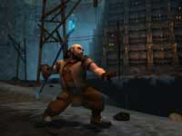Ogden Stonehealer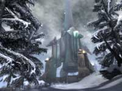The Eye of the North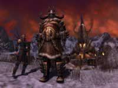Norn and Human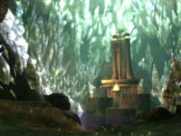Statue of Balthazar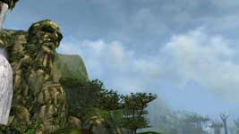Dwarven Face - Riven Earth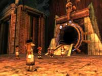Asurans and their Gate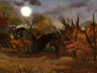Charr Homeland
Guild Wars 2
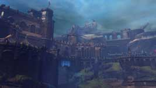Vigil Keep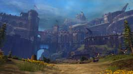Vigil Keep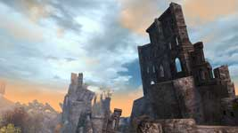The Great Northern Wall - Day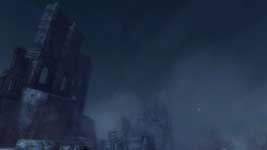The Great Northern Wall - Night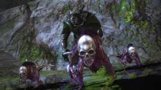Charr Necromancer and Minions